During my time in university, I have done several meaningful and interesting projects, here are some of those I am most pround of.
CS project:
This is my computer science program from the Python programming class, the final project is a game about alien shooting.
What we are supposed to create, is a game that includes one player, which is shown as a spaceship in the game There is going to be a group of aliens, alinged in a group, and they are the enemies that we will need to kill. The spaceship have some bullets that could be shooted out, and these bullets could kill the aliens. There are also several GUI and some other resitrictions in the game that we will need to implement in order for it to be working correctly.
The code itself contains around 1000 lines of code, and they are broken up into several different modules, such as the wave, which is to control each wave of aliens, the model class, which is the basic settings for the spaceship, alliens and the bullets. Finally there is also an app module, which is the general controller of the application.
Project Stages:
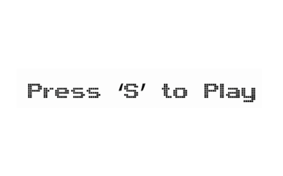 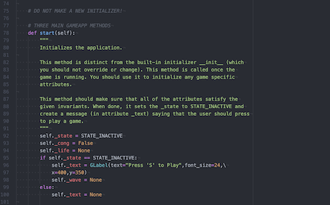Source: CS110 A7
The first stage is game initialization, where we would like to create a welcome screen, and initialize how the game start, for example how should the aliens and the spaceship appear, and where we would want to put the scores, the titles, and all these initialization related elements.
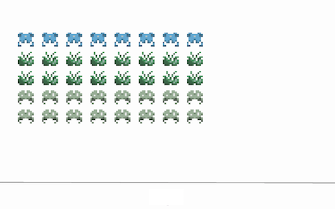 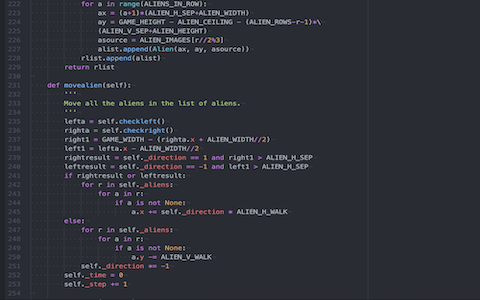Source: CS110 A7
The second stage is creating a wave of aliens, we start by creating the basic feature and function on a single alien, and then we are ready to create a whole set of aliens. This is a lot more challenging, as the way they move is not as simple as one alien, and requires several calculation and logic deduction. After that, we would be doing the drawing for the aliens, which completes this part.
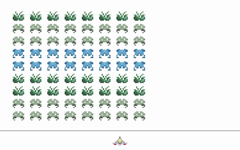 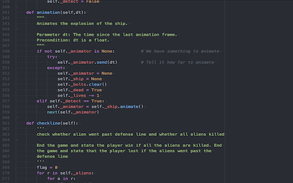Source: CS110 A7
The thrid stage is the creation of the player spaceship. Just as the aliens, out first step is to create the basic features of the spaceship. After that, we would view how the spaceship move, and make some according modification. The last step in this stage is to do the GUI animation for the explosion of the spaceship, which requires a little synchronization skills.
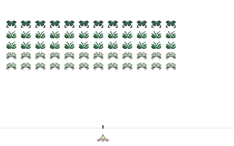 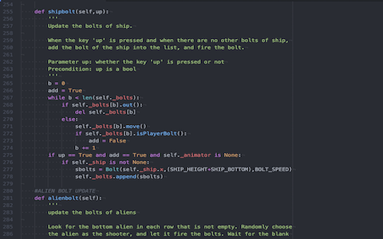Source: CS110 A7
The fourth stage is to create the bullets. There are both bullets for the aliens to attack the player and the player to attack the alinens. And as the aliens are being killed, we also need to manage the fact that dead aliens cannot shoot our bullets. Also the bullets are supposed to be moving with spaceships, which also requires some thinking.
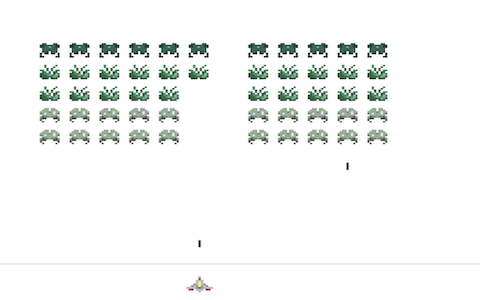 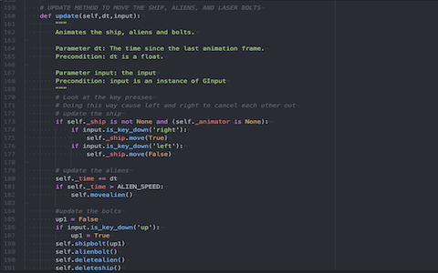Source: CS110 A7
The fifth stage is to manage the collision, and how to make everything else in the game change after a collision happen. For example, how should the scores change, how should the status of an alien or a bullet change. Thses are all factors of consideration in this stage.

Source: CS110 A7
The final stage is to wrap up, and adding some interesting features to this game, and we are done!
Electrical project:
Most of my electrical project are for my robotics project team.
This is the circuits that I built for my project team.
This is a little LED blinking process, where you want this to be connected to the system of the robot. So that when the robot is running different systems, the person would always know which program the robot has been running, and if something went wrong, what could be the possible error information.
Project Stages:
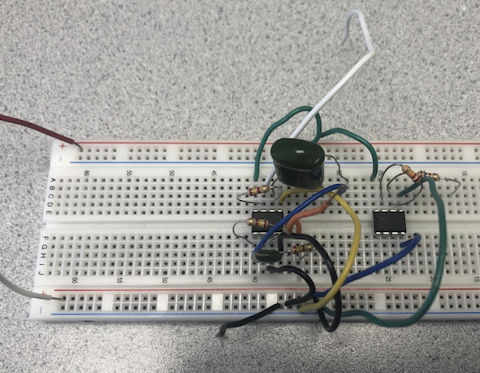 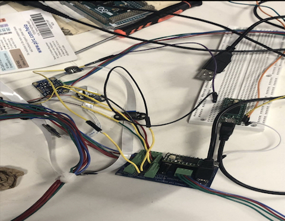First, we would be interested in building a simple circuit. Since there are 6 different functions of the robot, so we would be interested in using 3 lights, so that we can interpret 8 different modes, that could make things a little fancy.
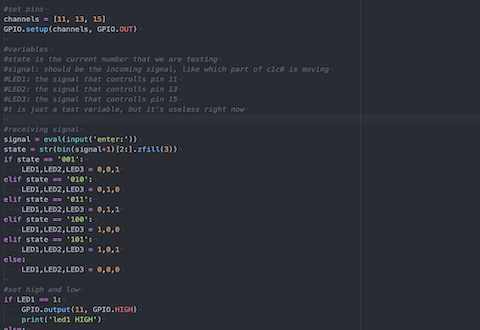 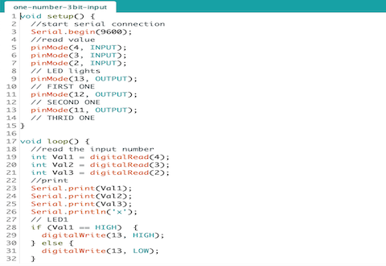The next step is to code the basic function of this circuit, which I used an arduino microcontroller. The code is simply explained as when a certain packet of information is being sent to my arduino, I should learn what it means, and read from the message which function it is used. This part is being utilized by python. After that, in my arduino coding, we would be sending out different codes, where different inputs would led the LED to display differently, so that it could be easily read by people.

Finally, it is integration with the other teams, where we would combine the system with the whole system. This step is currently still being implemented, and we only have a brief picture of implementation.